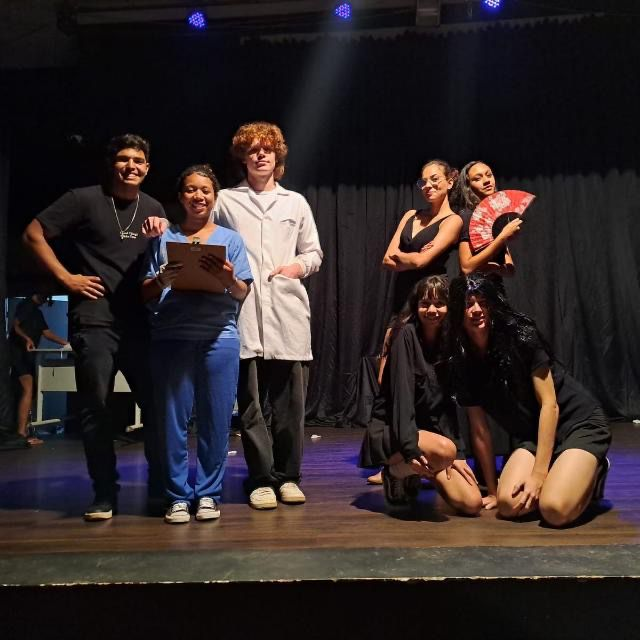

A Peça Perdoa-Me por Me Traíres
Nelson Rodrigues também abordou o desejo reprimido, revelando como os personagens lutam com pulsões consideradas imorais, e trata da tragédia e redenção, mostrando que a traição e o perdão podem levar à autodescoberta ou ao sofrimento. A trama se concentra na jovem Glorinha e suas relações com seu tio Raul e sua tia Odete, envolvendo-se em um ciclo de vingança, prostituição e busca por identidade. A peça expõe o machismo, a violência e a exploração da sexualidade como poder, desafiando valores tradicionais e revelando a hipocrisia que derrota as relações sociais
